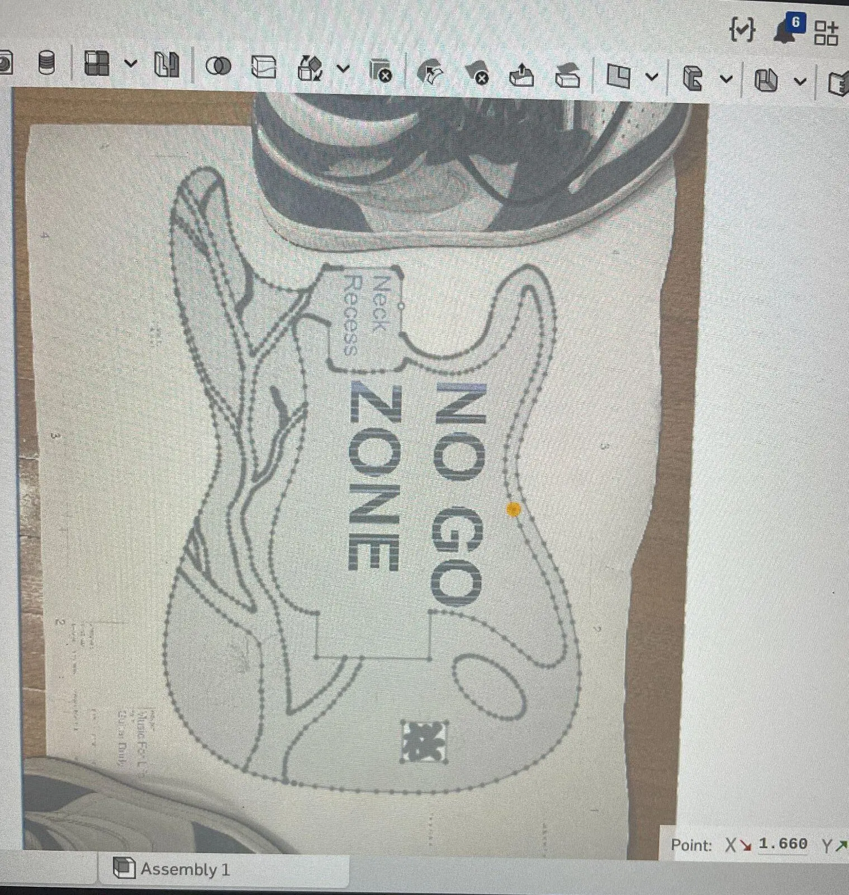
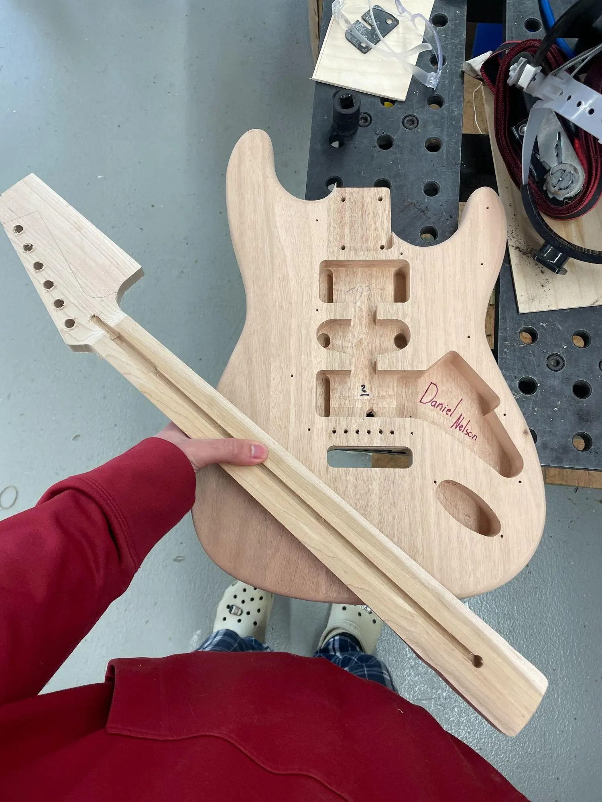
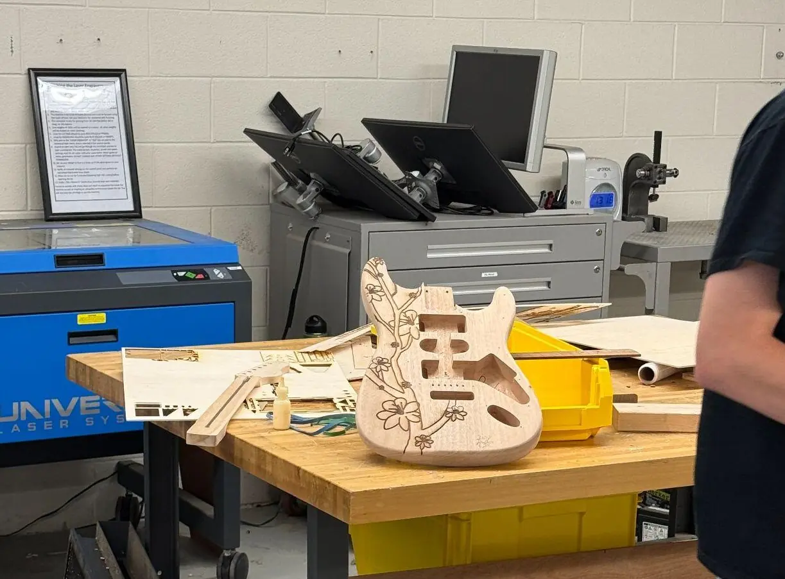
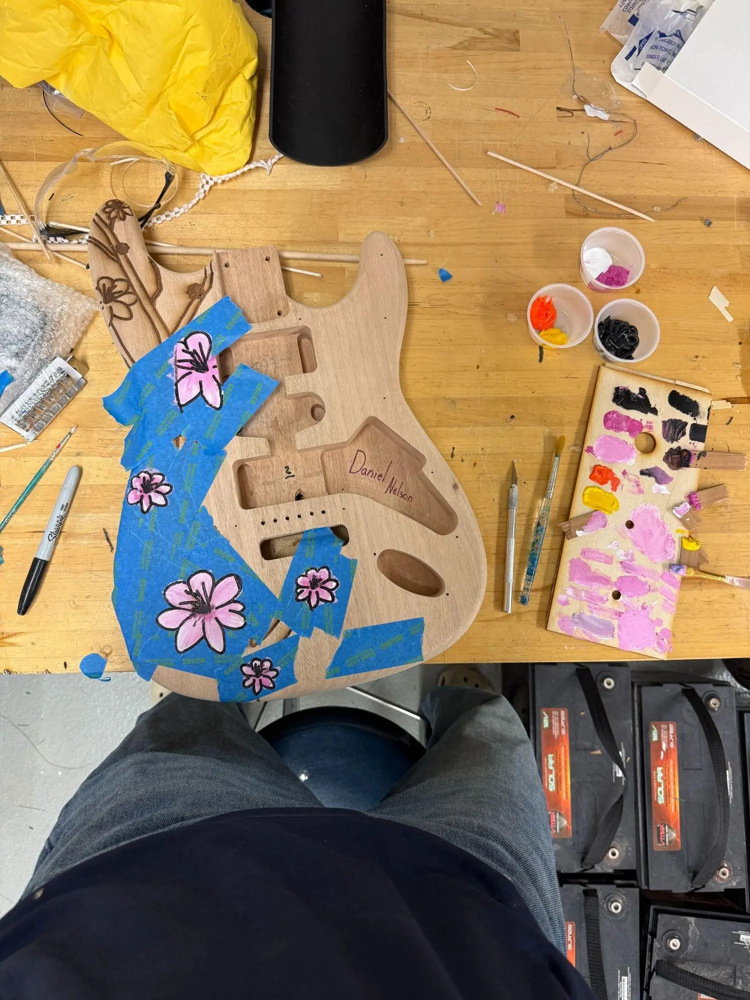
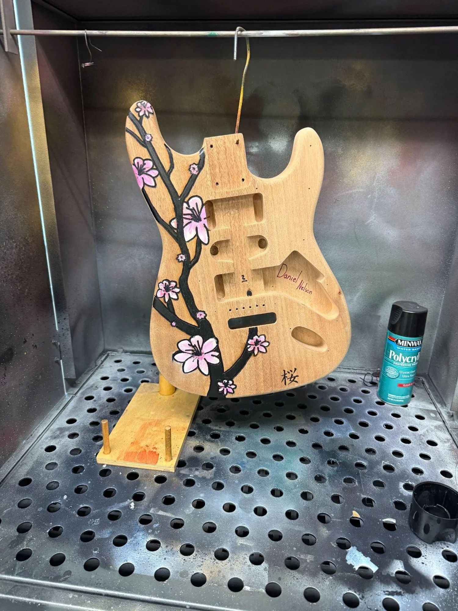
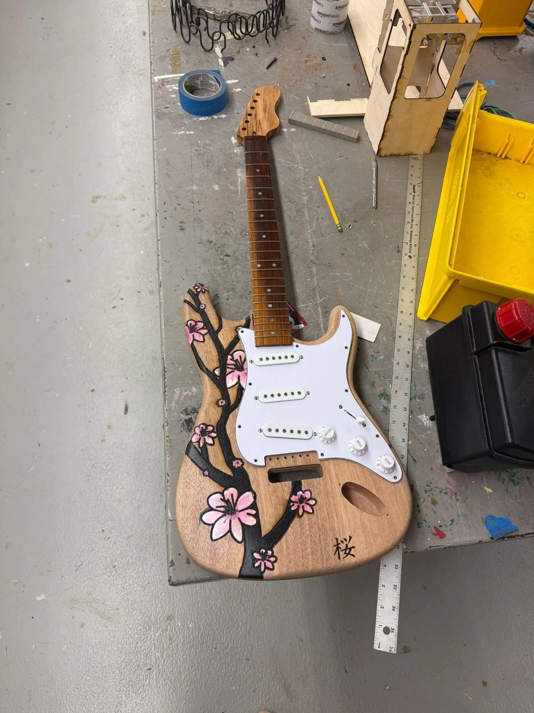
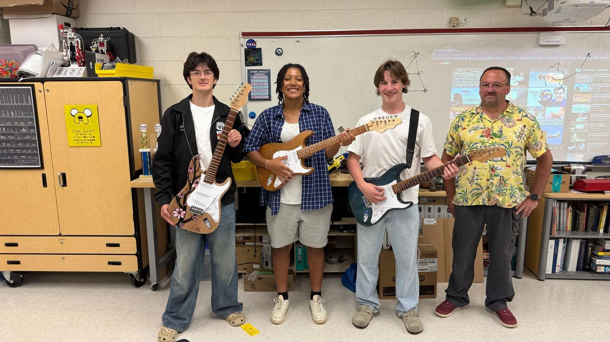
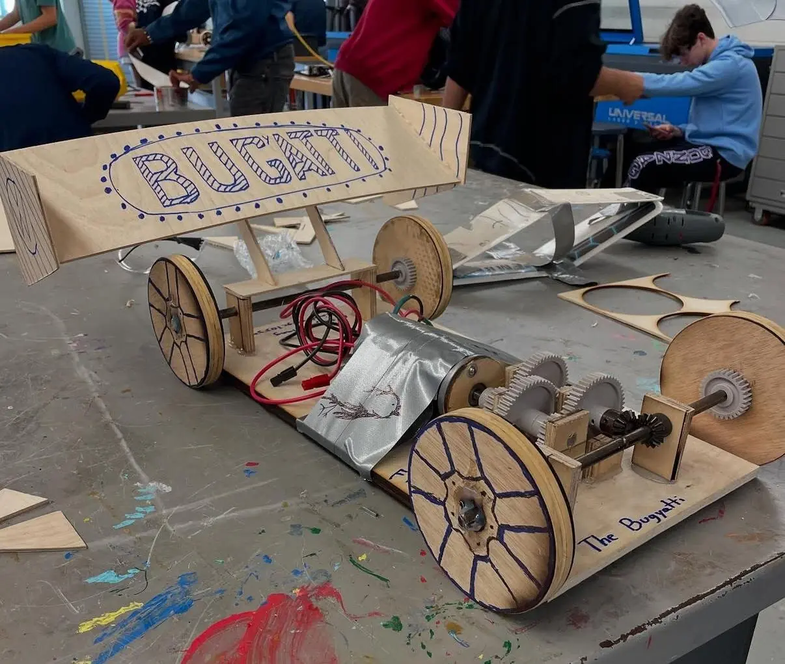

IndexSheet 04 · Manufacturing · 2022
From CAD to part
Three years in an integrated machinist and manufacturing program taught me to design for the machine that will make the part. That habit carries through everything else on this site.
- Duration
- Three years, 2022–2025
- Processes
- CAD/CAM · CNC mill + lathe · manual machining · waterjet · ironworker · bandsaw · laser cutting · 3D printing · MIG welding · woodworking
- Practice
- Tolerancing · workholding · prototyping · assembly
- Builds
- Trebuchet · air engine · puzzle box · miniature furniture · electric guitar · gearbox vehicle
2025 · Build sequence
An electric guitar, CAD to soldered
Three of us each built a guitar. Mine went from a CAD model to a laser-cut body, then shaping, paint and clear coat, and finally wiring and soldering the electronics before setup and tuning. Scroll the sequence →







Capability ledger
Where each process shows up
I care less about the list of machines than about taking a part from model to metal, at the tolerance it needs.
| Process | Where it shows up |
|---|---|
| CAD / CAM | Ball-joint toolpaths, flight simulator · go-kart parts |
| CNC milling & turning | Ball studs and socket halves, 6061 aluminum |
| Manual machining | Valve back-cuts, Formula SAE |
| Plasma cutting | Engine-disassembly tool, Formula SAE |
| Laser cutting | Guitar body · gearbox vehicle |
| MIG welding | Go-kart chassis and exhaust · FSAE header and gearbox |
| Waterjet · ironworker · bandsaw · 3D printing · woodworking | Program builds: trebuchet, air engine, puzzle box, miniature furniture |
| GD&T · tolerancing · workholding | Toleranced drawings for the ball joint and everything above |
2024 · Class competition
A laser-cut car with its own gearbox
For a class-wide engineering competition, we studied gear types, meshing, mechanical advantage and tolerancing. Then, without guided instruction, we designed a working gearbox and laser-cut and assembled the vehicle around it.
Built
